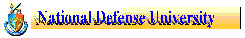

1999 TOPICAL Symposium, Washington D.C.
1999 TOPICAL Symposium -
"After Kosovo: Implications for U.S. Strategy and Coalition Warfare"
November 16-17, 1999
Vacancy Announcement
Professor of Systems Management
New Strategic Forums
Partnership for Peace (PFP):
After the Washington Summit and Kosovo
Humanitarian Intervention: The
Case for Legitimacy
U.S.-European Union Relations
German Security Policy
Japan's Security Policy
New Books
U.S. Russian Partnership:
Meeting the New Millennium
Somalia Operations:
Lessons Learned
The Big Three: Our
Greatest Security Risks and How to Address Them
Crisis? What
Crisis? Security Issues in Colombia
Espanol version - ¿Crisis? ¿Cual Crisis? Temas de
Seguridad en Colombia
NATO1997 Year of Change
Strategic Assessment 1998
Engaging Power for Peace
New McNair Paper
Right Makes Might: Freedom
and Power in the Information Age
Frequently Asked Questions
NDU FAQ
Updated: 20 Oct/klw
As of 23 Aug 99